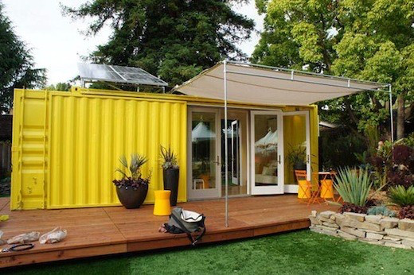
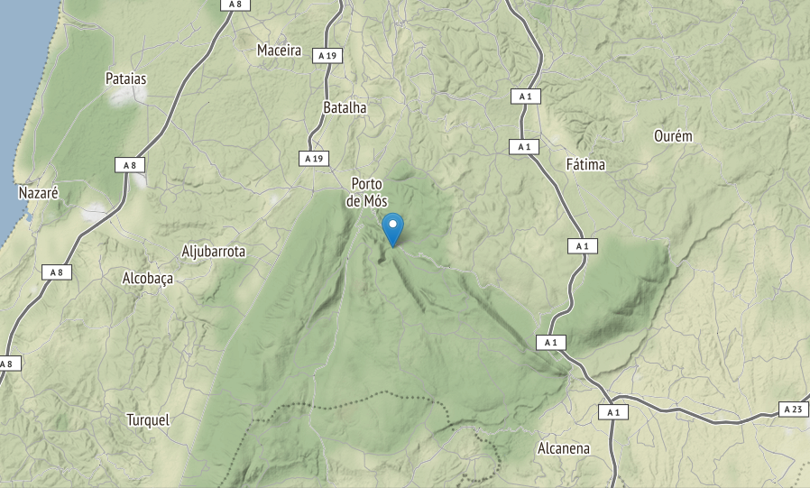

Empreendimento turístico
Table of Contents
1 IN-PROGRESS Introdução
Este website foi criado devido à necessidade de existência de um espaço virtual, em que fosse possível a partilha de dados e informação referentes à criação de um Empreendimento. Este trabalho está inserido no curso de licenciatura de Engenharia Civil e consiste na criação, desenvolvimento e controlo das diversas fases de um Empreendimento, na óptica de um engenheiro civil.
Importa desde já referir, que o texto deste website é feito na condição de Promotor, em que são desenvolvidos inicialmente os primeiros passos do Empreendimento, indo depois progredindo, com a análise financeira, qualitativa e temporal.
Será então, e de uma forma sumária, introduzido a visão geral do Empreendimento, os objetivos que se pretende com o mesmo, a perspetiva financeira inicial quanto aos resultados e a conjuntura que leva às escolhas e objetivos pretendidos.
Sendo este website de livre acesso ao público em geral, é importante referir que a informação que aqui consta, é para um projeto fictício, e que portanto não deverá ser usado como fonte de informação ou de apoio a nenhum trabalho, seja ele académico ou não.
Este website encontra-se em atualização.
2 IN-PROGRESS A Ideia e a Equipa
Elaboração provisória dos objetivos do Empreendimento, assim como alguns dos grupos participantes no processo de criação e estudo da viabilidade económica-financeira, ambiental e quais quer outros estudos que se venham a mostrar necessários no desenvolvimento do Empreendimento.
Nesta página ,encontra-se o resumo de todas as fases de um projeto, de acordo com os apontamentos do Professor António Duarte.
2.1 O Empreendimento
O empreendimento consiste na instalação e exploração de uma aldeia hoteleira e turística, no concelho de Porto de Mós, em plena Serra de Aire e Candeeiros, perto do percurso pedestre da Fórnea.
A aldeia será composta por um conjunto independente de casas, que têm como característica comum o fato de serem fabricadas a partir de contentores industriais usados. Uma ideia do tipo de casa pode ser vista na Figura 1 . 1

Figure 1: Exemplo de uma das casas a serem construídas
Georreferenciação do projeto:
A localização georreferenciada do projeto, pode ser vista aqui (abre
uma nova janela).
No topo esquerdo da nova janela, tem um botão
com "show code".
O Pressionar desse betão faz com seja apresentado o
código em python usado na elaboração da Georreferenciação, com os
valores das latitudes e longitudes para o projeto.
A figura 2, é o mapa da localização do projeto, estando este localizado a poucos kms a Sul de Porto de Mós, no Distrito de Leiria.

Figure 2: Mapa regional com a localização do projeto
Este mapa e outros mais, também pode ser visto aqui, caso exista algum problema com a
conversão de python para html no link acima referenciado na
"Note".
Limites da Propriedade
Georreferenciação de pontos ao longo do limite da propriedade
| Ponto | Latitude | Longitude |
|---|---|---|
| A | 39.5667 | -8.7973 |
| B | 39.5671 | -8.7962 |
| C | 39.5662 | -8.7942 |
| D | 39.5646 | -8.7929 |
| E | 39.5640 | -8.7944 |
Qualidade:
A imagem será um dos pontos mais importantes do empreendimento, com especial valorização ao modo como o projeto se vai integrar tanto na comunidade local, como no habitat natural da zona. Torna-se assim vital que os níveis de qualidade sejam estabelecidos no Projeto de Investimento, servindo de base à restante documentação:
- Obtenção da certificação LEED . O nível de certificação a atingir no projeto será decido em altura de Pré-Designe, com a colaboração dos restantes membros do Empreendimento.
- Toda a construção deve estar perfeitamente enquadrada com o habitat natural da zona.
- Todo o impacto ao habitat natural, deve ser mantido ao mínimo, tanto durante construção como durante a exploração.
- O projeto terá um total de 10 unidades em uma primeira fase, acrescida de outras 10, em uma segunda fase. No centro das unidades, estará a estação de serviço, que albergará os escritórios, recepção e serviços de manutenção.
- A informação quanto ao desenvolvimento do projecto será centralizada, sendo acessível aos vários membros da equipa. Pretende-se assim implementar o BIM na gestão do projecto. O uso das siglas B.I.M. ao longo deste documento e em futuros, representa um sistema de partilha de informação e não o de uso de algum software em especial.
Tempo:
São diversas as fases do Empreendimento, sendo mais tarde desenvolvido, com a colaboração de toda a equipa, uma análise mais aprofundada. Neste momento, é interesse desenvolver as metas em termos gerais do que é pretendido do projeto.
| Fase | Duração |
|---|---|
| Formação da Equipa | 3 meses |
| Processo de análise e desenvolvimento do projeto | 12 meses |
| Construção | 6 meses |
| Atividades de inicio de exploração | 2 meses |
| Adicionar 10 unidades à aldeia | final de 3 anos |
| Tempo de vida do projeto | 50 anos |
Custo:
Devido ao tipo de características do Empreendimento, o público alvo é bem especifico, sendo de esperar que seja uma clientela jovem, com gosto pela natureza, e por turistas, que quer visitando a Serra de Aire ou Fátima, estando esta última a 30kms de distância, decidam pernoitar na aldeia. É de acordo com o gosto e necessidades destas pessoas que as várias unidades serão decoradas, algo que se espera não tenha um preço muito significativo.
| Descrição | Preço (euros) |
|---|---|
| Obtenção e preparação do terreno | 100000 |
| Obtenção de 10 contentores usados | 25000 |
| Preparação das 10 unidades (interior e exterior) | 100000 |
| Pagamento à equipa | 60000 |
| Construção da Estação central | 25000 |
| Licenças, impostos e taxas | 10000 |
| Diversos | 35000 |
| Total | 355000 |
A tabela 2 apresenta os custos esperados até ao inicio das atividades de exploração. A este valor, há que depois acrescentar as despensas de pessoal e manutenção, para manter em funcionamento as operações diárias na aldeia. O valor Total das despesas na fase inicial do Empreendimento, será repartido por aproximadamente dois anos, como estimado na tabela 1.
2.2 Gestor de Projeto
- Sendo este um projeto que pretende alcançar a certificação LEED, um dos requisitos mais desejados no Gestor, será o conhecimento e experiência com projetos sustentáveis. Ele próprio, ser certificado pelo USGBC ou mesmo pelo BREEAM é certamente uma mais valia para o projeto. 2
- A experiência é mais valorizada que o grau académico. O Gestor deve ter pelo menos 10 anos de experiência em equipas de liderança de Empreendimentos na construção civil.
- Capacidade de criação e liderança de uma equipa multidisciplinar. A equipa será formada o mais cedo possível, e incluí todos os intervenientes ou os representantes destes, que de uma forma ou outra, serão afetados pelo projeto.
- Sentir-se à vontade a lidar com sistemas informáticos de informação centralizados (BIM), de modo que toda a equipa possa facilmente compartilhar, alterar, rever e criar o Projeto em conjunto.
2.3 Consultores
Os consultores deverão integrar a Equipa de Projeto, desde o início, e manterem-se ao longo das diversas fases. Após o início das operações na Aldeia, uma nova equipa deve ser formada, de acordo com as necessidades das operações.
- Engenheiro do ambiente, de modo a aconselhar na integração do projeto no habitat local.
- Arquiteto com experiência em construção sustentável.
- Decorador de interior com experiência em construção moderna.
- Advogado, com experiência a lidar com projetos de construção.